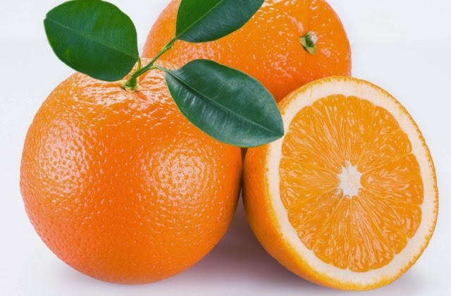

TentangBuah.com
Jeruk

Jeruk adalah buah yang memiliki bentuk yang bulat dan kulit yang berwarna oranye. Aroma yang khas dikeluarkan oleh jeruk pun sangat kuat sehingga kita dapat dengan mudah menebak buah jeruk tanpa harus melihatnya.
Jeruk berasal dari Asia Timur dan Asia Tenggara . Sedangkan jeruk manis dan sitrun (lemon) berasal dari Asia Timur. Dan jeruk bali, jeruk nipis dan jeruk purut berasal dari Asia Tenggara
Jeruk sering digunakan sebagai bahan pangan,wewangian,maupun industri. Buah jeruk adalah sumber vitamin C.
Khasiat Jeruk
- Melancarkan Pencernaan
- Merawat kesehatan mulut
- Mengatasi sakit tenggorokan
- Menyehatkan jantung
- Mencegah anemia
- Membersihkan darah
Daftar Harga
| Jenis Jeruk | Harga | |
|---|---|---|
| Per Kilo | Per Biji | |
| Jeruk Nipis | 50.000 | 5.000 |
| Jeruk Bali | 60.000 | 6.000 |
| Lemon | 70.000 | 7.000 |
| Jeruk | 55.000 | 5.500 |